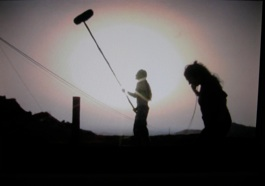
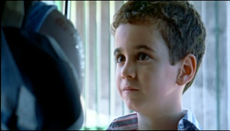
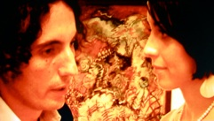
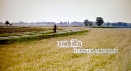
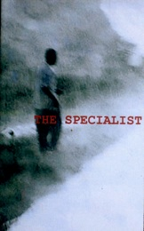

Lama Film




The unmaking of
produzione: Lama Film
scritto e diretto da Andrea D’Ambrosio
con Franco Arminio
musiche originali: Paranza Vibes
edizioni musicali: Warner Chappell Music
genere: documentario
durata: 59'
anno 2010

produzione: Kinos Klan, (Spagna)
co-produttore minoritario: Lama Film (Italia)
regia: Juan Manuel Chumilla Carbajosa
con: Patricia Hurt, Cesare Apolito, Stefan Nicoll
e con la collaborazione speciale di
Kit Carson
Jines Garcia Millan
Rafael Alvarez "El Brujo"
genere: docu- fiction
anno 2009/10
produzione: Lama Film
scritto e diretto da: Giuseppe K Miglietta
con: Davide Poggioli & Sonia Paulo Mavunj
Genere: cortometraggio
durata: 10’
anno: 2007




produzione :Taodue film
produzione esecutiva: Lama Film
regia : Gianluca Maria Tavarelli
con (ordine alfabetico):
Giuseppe Battiston, Valerio Binasco, Michela Cescon, Paola Cortellesi, Donatella Finocchiaro, Alessandro Gassman, Francesca Inaudi, Valeria Milillo, Rocco Papaleo, Micaela Ramazzotti, Andrea Renzi, Giorgio Tirabassi, Luca Zingaretti
genere: drammatico
durata: 96’
anno:2006
The Specialist
Un filo intorno al mondo
produzione: (h)
produzione esecutiva: Lama Film
scritto e diretto da : Gianluca Maria Tavarelli
con: Valerio Aprea, Susy Laude
fotografia: Andrea Locatelli
montaggio: Alessandro Heffler
scenografia: Valentina Scalia
genere: cortometraggio
durata: 5’
anno: 2005
produzione: A.GI.DI srl - Set in Spa
produzione esecutiva: Lama Film
scritto e diretto da: Sophie Chiarello
con: Aldo, Giovanni e Giacomo
fotografia: Vittorio Omodei Zorini
montaggio: Antonio di Peppo
scenografia: Daniela Gardinelli
costumi: Loredana Buscemi
muisiche: Sebastiano Cognolato
genere: cortometraggio
durata: 15’
anno: 2006
La mia ossessione